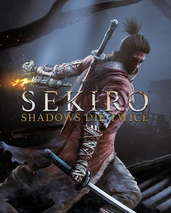
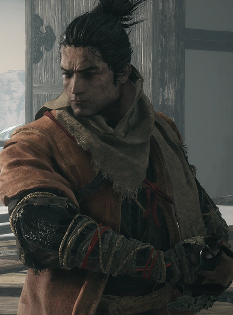
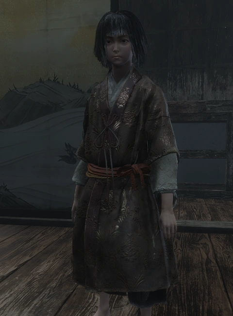
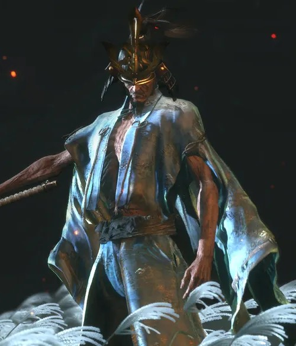
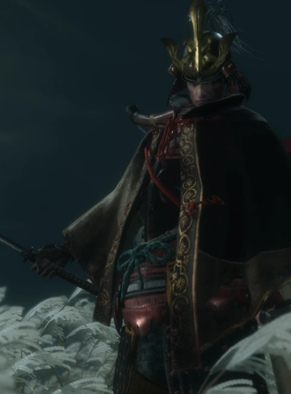

Sekiro: Shadows Die Twice
Sekiro: Shadows Die Twice es un videojuego de acción-aventura desarrollado por FromSoftware y
publicado
por Activision. Dirigido por Hidetaka Miyazaki; su fecha de estreno fue el 22 de marzo de 2019 para
PlayStation 4, Xbox One y Microsoft Windows. Su historia la protagoniza un shinobi llamado Sekiro,
cuya
intención es la de vengarse de un samurái que le atacó y secuestró a su señor.
Ambientado en los últimos años del período Sengoku; Sekiro: Shadows Die Twice representa un mundo
marchito pero vivaz, generado por una reinterpretación de la estética de inspiración japonesa; donde
se
desarrolla la batalla de un shinobi solitario, sujeto al código. Recorre libremente ambientes
tridimensionales abiertos, meticulosamente diseñados y rebosantes de secretos para explorar,
mientras
utilizas todo lo que tienes a tu disposición para enfrentarte a enemigos poderosos en esta
experiencia
totalmente única.
|
Sekiro: Shadows Die Twice
|
|

|
| Desarrollador |
FromSoftware y Yoshitaka Suzuki |
| Distribuidor |
Humble Store, Steam, PlayStation Store, Microsoft Store y Stadia |
| Diseñador |
Masaru Yamamura y Yuki Fukuda |
| Plataformas |
PlayStation 4, Xbox One y Microsoft Windows |
| Género |
Acción-aventura, Soulslike y dark fantasy video game |
| Modos de juego |
Un jugador |
Personaje
Sekiro

Es un shinobi que sirve a un joven señor descendiente de un antiguo linaje. Ligado a su honor, es
un
hombre
sereno y reservado, aunque también despiadado a la hora de completar su misión de venganza con
los
métodos
que sean necesarios.
Cuando Sekiro era niño sufrió las consecuencias de un conflicto que afectó a la población
japonesa al
final
de la Era Sengoku. Tanto él como El Búho sobrevivieron a la batalla. El joven se dedicó a
saquear
algunos
cadáveres hasta que se encontró con este guerrero. El Búho pasó ligeramente el filo de su espada
a
través de
su rostro, dejándole una cicatriz que le marcó del mismo modo que a él. El shinobi le preguntó
si tenía
a
alguien en su vida, y al deducir que se encontraba huérfano, le acogió bajo su amparo.
Cuando comienza la historia, Sekiro pierde la vida al enfrentarse al líder del Clan Ashina,
perdiendo al
joven señor al que debía proteger. Durante ese combate también pierde su brazo izquierdo, y a
cambio
recibe
una prótesis que mejora sus capacidades de combate. El código shinobi es absoluto, y lo guía
hacia su
venganza.
Kuro

Kuro es parte integral de la trama del juego y de los eventos que se desarrollan durante el
mismo. Es el
único descendiente de un antiguo linaje misterioso y, al igual que los shinobi, está sólo en el
mundo.
Fue adoptado y criado por la familia Hirata. Al contrario que los niños de su edad, es
tranquilo, tiene
un corazón fuerte, y da una impresión natural de dignidad. Debido a su linaje es capturado por
el
Comandante del Clan Ashina, fallando el Lobo en su protección.
Isshin Ashina

Isshin Ashina es el fundador del Clan Ashina y abuelo del Comandante Genichiro. Fue un kensei,
un
honorable guerrero japonés conocido por su maestría con la espada. Tiempo atrás, tomó el control
de su
región en una sola generación, fundando el clan y ganándose el título de "Héroe del País del
Norte".
Cuando era joven, luchaba sin parar puliendo su técnica con sangre enemiga. Consolidó sus
enseñanzas en
el "estilo Ashina" para favorecer el dominio de su clan.
Durante los eventos del juego, el fundador del Clan Ashina se muestra como un hombre ya en la
tercera
edad. Es un hombre muy alto, con cabello canoso y muy delgado, se muestra cansado muchas veces
ya que
usualmente se mantiene en constante reposo gracias a Emma quien lo cuida.
Genichiro Ashina

El Comandante Genichiro es el líder del Clan Ashina. Es el nieto de Isshin Ashina, un legendario
espadachín y héroe del norte que fundó el clan, aunque no como un nacimiento legítimo, ya que
fue
adoptado tras la muerte de su madre plebeya. No obstante, tiene un profundo sentido del deber
hacia el
clan. Con su país al borde de la derrota, su gente debe ser protegida incluso a través de medios
sobrenaturales; Genichiro estudió las "artes heréticas" y dominó el relámpago de Tomoe.
Genichiro decide raptar al joven señor para que haga uso de sus poderes inusuales ligados a su
linaje.
Video
Premios
El juego recibió múltiples nominaciones, ganando diferentes premios como el premio a Juego del año de
los The Game Awards 2019, los premios de GameSpot o los Steam Awards, votados por fanes.
| Año |
Premios |
Categoría |
Resultado |
| 2018 |
Game Critics Awards |
Mejor Show |
Nominado |
| Mejor juego original |
Nominado |
| Mejor juego de consola |
Nominado |
| Mejor juego de acción/aventura |
Nominado |
| Golden Joystick Awards |
Juego más esperado |
Nominado |
| Japan Game Awards |
Premio a la excelencia |
Ganador |
| Golden Joystick Awards |
Mejor diseño visual |
Nominado |
| 2019 |
The Game Awards 2019 |
Juego del año |
Ganador |
| Mejor dirección |
Nominado |
| Mejor dirección de arte |
Nominado |
| Mejor diseño de audio |
Nominado |
| 23 Annual D.I.C.E. Awards |
Juego del año de acción |
Nominado |
| Game Developers Choice Awards |
Juego del año |
Ganador |
| 2020 |
SXSW Gaming Awards |
Excelencia en logro visual |
Ganador |
| British Academy Games Awards |
Mejor juego |
Nominado |
| Animación |
Nominado |
| Mejor diseño |
Nominado |